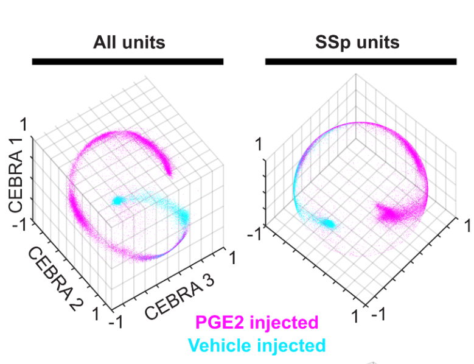
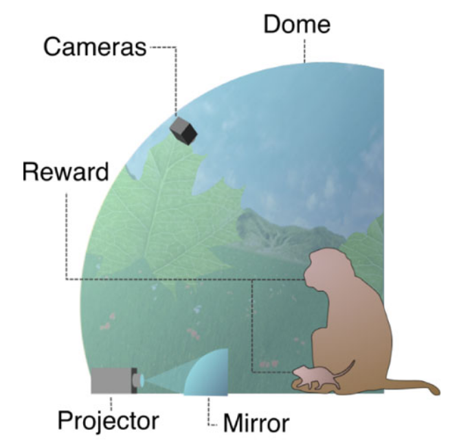
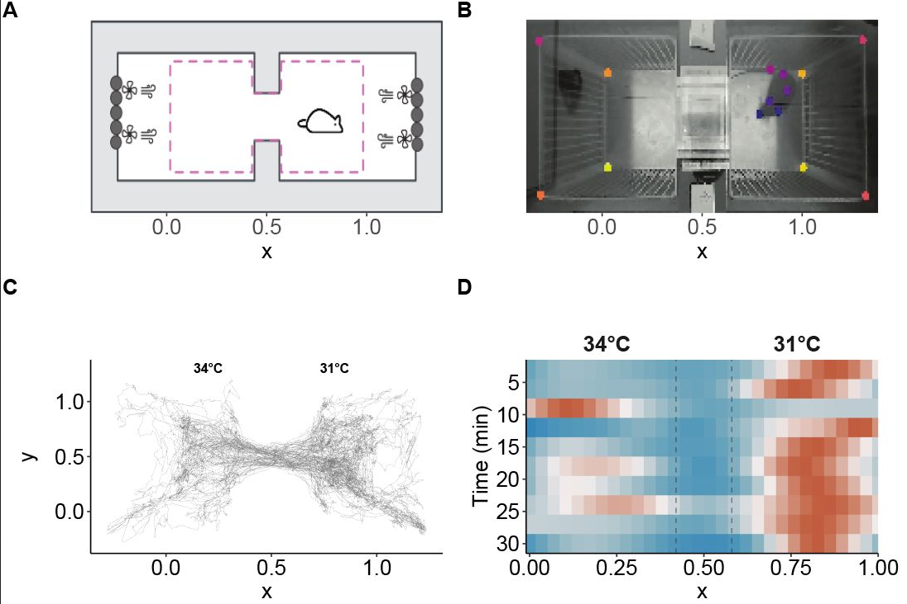
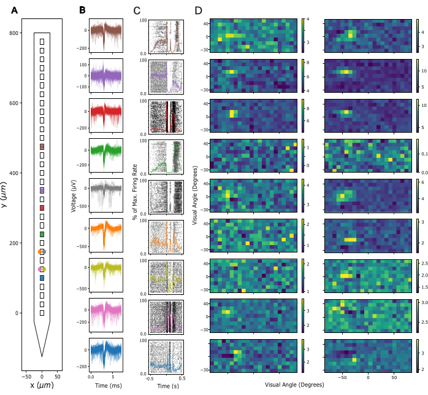

Mua'ath
Neuroscientist
By day I’m a neuroscientist studying how the brain processes psychedelics and drives animal behavior. On weekends you might find me at a rave giving a harm-reduction talk.
This is my corner of the internet — part research log, part food journal, part whatever I find interesting. Think of it as my alternative to social media: a place to share ideas without platform restrictions.
Publications

Kamm, G. B.,
Boffi, J. C.,
Abd El Hay, M. Y.,
Rajot, D.
Cukić, A.
Havenith, M. N.
Scholvinck, M.
Renier, N.
Asari, H.
Prevedel, R.
Central Infusion of Prostaglandin E2 Reveals a Unified Representation of Sickness in the Mouse Insular Cortex
Central Infusion of Prostaglandin E2 Reveals a Unified Representation of Sickness in the Mouse Insular Cortex
In
bioRxiv,
2025.
This study examines how the brain encodes sickness by injecting prostaglandin E2 into awake mice and recording neural activity. Using whole-brain mapping and electrophysiology, we found that the insular cortex preferentially encodes an integrated measure of sickness rather than individual symptoms, suggesting it serves as a unified representation of the sick state in the neocortex.

Tlaie, A.,
Abd El Hay, M. Y.,
Mert, B.
Taylor, R.
Ferracci, P.-A.
Shapcott, K.
Glukhova, M.
Pillow, J. W.
Havenith, M. N.
Schölvinck, M. L.
Inferring Internal States across Mice and Monkeys Using Facial Features
Inferring Internal States across Mice and Monkeys Using Facial Features
In
Nature Communications,
2025.
This study develops a virtual reality setup where mice and macaques perform the same visual foraging task, using facial features to identify internal cognitive states that predict behavioral responses. The research shows that similar internal states exist across species and can be inferred from facial expressions, highlighting the cross-species importance of facial features in manifesting cognitive states.

Abd El Hay, M. Y.,
Kamm, G. B.,
Tlaie, A.
Siemens, J.
Diverging roles of TRPV1 and TRPM2 in warm-temperature detection
Diverging roles of TRPV1 and TRPM2 in warm-temperature detection
In
eLife,
2025.
This study investigates how we sense warmth through specialized neurons. By examining over 20,000 mouse sensory neurons, we found that two ion channels (TRPV1 and TRPM2) play distinct roles in temperature detection. TRPV1 helps with quick warm sensing, while TRPM2 influences how many neurons respond to warmth. These findings help explain how animals make decisions about temperature preferences and maintain thermal comfort.

Schroeder, T.,
Taylor, R.,
Abd El Hay, M.,
Nemri, A.
França, A.
Battaglia, F.
Tiesinga, P.
Schölvinck, M. L.
Havenith, M. N.
The DREAM Implant: A Lightweight, Modular, and Cost-Effective Implant System for Chronic Electrophysiology in Head-Fixed and Freely Behaving Mice
The DREAM Implant: A Lightweight, Modular, and Cost-Effective Implant System for Chronic Electrophysiology in Head-Fixed and Freely Behaving Mice
In
JoVE (Journal of Visualized Experiments),
2024.
This protocol introduces the DREAM (Dynamic, Recoverable, Economical, Adaptable, and Modular) implant system for chronic electrophysiology in mice. The system provides a lightweight, cost-effective solution with standardized hardware that can be implanted easily and explanted safely for probe reuse, significantly reducing experimental costs while maintaining high-quality recordings.
Cite Central Infusion of Prostaglandin E2 Reveals a Unified Representation of Sickness in the Mouse Insular Cortex
@misc{kamm2025a,
title = {Central Infusion of Prostaglandin {{E2}} Reveals a Unified Representation of Sickness in the Mouse Insular Cortex},
author = {Kamm, Gretel B. and Boffi, Juan C. and Hay, Muad Y. Abd El and Rajot, Domitille and Cuki{\'c}, Ana and Havenith, Martha N. and Scholvinck, Marieke and Renier, Nicolas and Asari, Hiroki and Prevedel, Robert},
year = {2025},
month = jun,
primaryclass = {New Results},
pages = {2025.04.28.651028},
publisher = {bioRxiv},
doi = {10.1101/2025.04.28.651028}
}Cite Inferring Internal States across Mice and Monkeys Using Facial Features
@article{tlaie2025,
title = {Inferring Internal States across Mice and Monkeys Using Facial Features},
author = {Tlaie, Alejandro and Abd El Hay, Muad Y. and Mert, Berkutay and Taylor, Robert and Ferracci, Pierre-Antoine and Shapcott, Katharine and Glukhova, Mina and Pillow, Jonathan W. and Havenith, Martha N. and Sch{\"o}lvinck, Marieke L.},
year = {2025},
month = jun,
journal = {Nature Communications},
volume = {16},
number = {1},
pages = {5168},
publisher = {Nature Publishing Group},
issn = {2041-1723},
doi = {10.1038/s41467-025-60296-1}
}Cite Diverging roles of TRPV1 and TRPM2 in warm-temperature detection
@article{Abd_El_Hay_2025,
title={Diverging roles of TRPV1 and TRPM2 in warm-temperature detection},
url={http://dx.doi.org/10.7554/eLife.95618.2},
DOI={10.7554/elife.95618.2},
publisher={eLife Sciences Publications, Ltd},
author={Abd El Hay, Muad Y and Kamm, Gretel B and Tlaie, Alejandro and Siemens, Jan},
year={2025},
month=jan }Cite The DREAM Implant: A Lightweight, Modular, and Cost-Effective Implant System for Chronic Electrophysiology in Head-Fixed and Freely Behaving Mice
@article{schroeder2024,
title = {The {{DREAM Implant}}: {{A Lightweight}}, {{Modular}}, and {{Cost-Effective Implant System}} for {{Chronic Electrophysiology}} in {{Head-Fixed}} and {{Freely Behaving Mice}}},
shorttitle = {The {{DREAM Implant}}},
author = {Schroeder, Tim and Taylor, Robert and Hay, Muad Abd El and Nemri, Abdellatif and França, Arthur and Battaglia, Francesco and Tiesinga, Paul and Schölvinck, Marieke L. and Havenith, Martha N.},
year = {2024},
month = jul,
journal = {JoVE (Journal of Visualized Experiments)},
number = {209},
pages = {e66867},
issn = {1940-087X},
doi = {10.3791/66867}
}